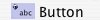
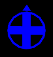

The Interface tab is where you watch your model run. It also has tools you can use to inspect and alter what’s going on inside the model.
When you first open NetLogo, the Interface tab is empty except for the view, where the turtles and patches appear, and the Command Center, which allows you to issue NetLogo commands.
The toolbar on the Interface tab contains buttons that let you edit, delete, and create items in the Interface tab and a menu that lets you select different interface items (such as buttons and sliders).
The buttons in the toolbar are described below.
Adding: To add an interface element, select the element from the drop down menu. Note that the Add button stays down. Then click on the white area below the toolbar. (If the menu is already showing the right type, you can just press the Add button instead of using the menu again.)
Selecting: To select an interface element, drag a rectangle around it with your mouse. A gray border with black handles will appear around the element to show it is selected.
Selecting multiple items: You can select multiple interface elements at the same time by including them in the rectangle you drag. If multiple elements are selected, one of them is the “key” item, which means that if you use the “Edit” or “Delete” buttons on the Interface Toolbar, only the key item is affected. The key item’s border is darker gray.
Unselecting: To unselect all interface elements, click the mouse on the white background of the Interface tab. To unselect an individual element, right-click the element and choose “Unselect” from the popup menu.
Editing: To change the characteristics of an interface element, select the element, then press the “Edit” button on the Interface toolbar. You may also double click the element once it is selected. A third way to edit an element is to right-click it and choose “Edit” from the popup menu. If you use this last method, it is not necessary to select the element first.
Moving: Select the interface element, then drag it with your mouse to its new location. If you hold down the shift key while dragging, the element will move only straight up and down or straight left and right.
Resizing: Select the interface element, then drag the black “handles” in the selection border.
Deleting: Select the element or elements you want to delete, then press the “Delete” button on the Interface toolbar. You may also delete an element by right-clicking it and choosing “Delete” from the popup menu. If you use this latter method, it is not necessary to select the element first.
To learn more about the different kinds of interface elements, refer to the chart below.
| Icon & Name | Description |
|---|---|
|  | A button is either once or forever. When you click on a once button, it executes its instructions once. The forever button executes the instructions over and over, until you click on the button again to stop the action. If you have assigned an action key to the button, pressing the corresponding keyboard key will act just like a button press when the button is in focus. Buttons with action keys have a letter in the upper right corner of the button to show what the action key is. If the keyboard focus is in another interface element such as the Command Center, pressing the action key won't trigger the button. The letter in the upper right hand corner of the button will be dimmed in this situation. To enable action keys, click in the white background of the Interface tab. |
|
Sliders are global variables, which are accessible by all agents. They are used in models as a quick way to change a variable without having to recode the procedure every time. Instead, the user moves the slider to a value and observes what happens in the model. |
|
Switches are a visual representation for a true/false global variable. You may set the variable to either on (true) or off (false) by flipping the switch. |
|
Choosers let you choose a value for a global variable from a list of choices, presented in a drop down menu. The choices may be strings, numbers, booleans, or lists. |
| Input Boxes are global variables that contain strings or numbers. The model author chooses what types of values you can enter. Input boxes can be set to check the syntax of a string for commands or reporters. Number input boxes read any type of constant number reporter which allows a more open way to express numbers than a slider. Color input boxes offer a NetLogo color chooser. | |
|
Monitors display the value of any reporter. The reporter could be a variable, a complex reporter, or a call to a reporter procedure. Monitors automatically update several times per second. |
|
Plots show data the model is generating. |
|
The output area is a scrolling area of text which can be used to create a log of activity in the model. A model may only have one output area. |
| Notes lets you add informative text labels to the Interface tab. The contents of notes do not change as the model runs. |
The other controls in the Interface toolbar allow you to control the view updates and various other model properties.
“Continuous” updates means that NetLogo updates (that is, redraws) the view many times a second, regardless of what is going on in the model. “Tick-based” updates means that the view only updates when the tick counter advances. (For a fuller discussion of view updates, see the Programming Guide.)
The large black square in the Interface tab is the 2D view. It’s a visual representation of the NetLogo world of turtles and patches. Initially it’s all black because the patches are black and there are no turtles yet. You can open the 3D View, an alternate visual representation of the world, by right clicking (ctrl-clicking on Mac) on the View and choosing “Switch to 3D View” (this option is also available in the “Tools” menu).
There are a number of settings for the View (accessible by editing the View, or by pressing the “Settings…” button in the Interface Toolbar):
Notice that the settings are broken up into three groups. There are world, view, and ticks counter settings. World settings affect the properties of the world that the turtles live in (changing them may require resetting the world). View and tick counter settings only affect the appearance, changing them will not affect the outcome of the model.
The world settings allow you to define the boundaries and topology of the world. At the top of the left side of the world panel you can choose a location for the origin of the world either “Center”, “Corner”, “Edge”, or “Custom”. By default the world has a center configuration where (0,0) is at the center of the world and you define the number of patches from the center to the right and left boundaries and the number of patches from the center to the top and bottom boundaries. For example: if you set Max-Pxcor = 10, then Min-Pxcor will automatically be set to -10, thus there are 10 patches to the left of the origin and 10 patches to the right of patch 0 0, for a total of 21 patches in each row.
A Corner configuration allows you to define the location of the origin as one of the corners of the world, upper left, upper right, lower left, or lower right. Then you define the far boundary in the x and y directions. For example if you choose to put the origin in the lower left corner of the world you define the right and top (positive) boundaries.
Edge mode allows you to place the origin along one of the edges (x or y) then define the far boundary in that direction and both boundaries in the other. For example if you select edge mode along the bottom of the world, you must also define the top boundary, as well as the left and the right.
Finally, Custom mode allows you to place the origin at any location in the world, though patch 0 0 must still exist in the world.
As you change the settings you will notice that the changes you make are reflected in the preview on the right side of the panel which shows the origin and the boundaries. The width and height of the world are displayed below the preview.
Also below the preview there are two checkboxes, the world wrap settings. These allow you to control the topology of the world. Notice when you click the check boxes the preview indicates which directions allow wrapping, and the name of the topology is displayed next to the world dimensions. See the Topology section of the Programming Guide for more information.
The view settings allow you to customize the look of the view without changing the world. Changing view settings will never force a world reset. To change the size of the 2D View adjust the “Patch Size” setting, measured in pixels. This does not change the number of patches, only how large the patches appear in the 2D View. (Note that the patch size does not affect the 3D View, as you can simply make the 3D View larger by making the window larger.)
The font size setting lets you control the size of turtle, patch, and link labels.
The frame rate controls how often the view gets updated. This can have a dramatic effect on the default speed at which a model runs. For more details, see the view updates section of the Programming Guide.
The “Smooth edges” checkbox controls the use of anti-aliasing in the 3D view only and only appears when editing from the 3D view. Unchecking it makes lines appear more jagged but may speed up rendering.
Tick counter settings control the appearance of the tick counter which is visible (or not) in the view control strip.
Turtle, patch and link monitors are easily available through the View, just
right-click on the turtle or patch you want to inspect, and choose
“inspect turtle …” or “inspect patch …” from the popup menu. You can also
watch, follow or ride a turtle by selecting the appropriate item in the turtle
sub-menu. (Turtle, patch and link monitors can also be opened from the Tools
menu or by using the inspect command.)
Some NetLogo models let you interact with the turtles and patches with your mouse by clicking and dragging in the View.
At the bottom of the window there are buttons to move the observer, or change the perspective from which you are looking at the world.
A blue cross appears at the current focus point as you adjust these settings. The little blue triangle will always point along the y-axis in the positive direction, so you can orient yourself in case you get lost. 
To look at the world from a different angle, press the “rotate” button, then click and drag the mouse. The observer will continue to face the same point as before (where the blue cross is) but its position in the relation to the xy-plane will change.
To move closer or farther away from the world or the agent you are watching, following or riding, press the “zoom” button and drag up and down. Note when you are in follow or ride mode zooming will switch you between ride and follow, since ride is just a special case of follow where the distance at which you are following is 0.
To change the position of the observer without changing the direction it is facing select the “move” button and drag the mouse inside the 3D View while holding down the mouse button.
To allow the mouse position and state to be passed to the model select the “interact” button and it will function just as the mouse does in the 2D view.
To return the observer and focus point to their default positions press the
“Reset Perspective” button (or use the reset-perspective command).
To enter fullscreen mode, press the “Full Screen” button, to exit fullscreen mode, press the Esc key.
Note: Fullscreen mode doesn’t work on every computer. It depends on your graphics card. See the System Requirements for details.
Some shapes are automatically mapped to true 3D counterparts in the 3D view. For example, the 2D circle shape becomes a sphere in the 3D view.
| Shape name | 3D shape |
|---|---|
| default | 3D turtle shape |
| circle | sphere |
| dot | small sphere |
| square | cube |
| triangle | cone |
| line | 3D line |
| cylinder | 3D cylinder |
| line-half | 3D line-half |
| car | 3D car |
All other shapes are based on their 2D forms. If a shape is a rotatable shape,
it is assumed to be a top view and it is extruded as if through a cookie cutter
and oriented parallel to the xy-plane, as in Ants.

Or, if a shape is non-rotatable, it is assumed to be a side view, and it is
drawn always facing the observer, as in Wolf Sheep Predation.

The Command Center allows you to issue commands directly, without adding them to the model’s procedures. This is useful for inspecting and manipulating agents on the fly.
(Tutorial #2: Commands is an introduction to using commands in the Command Center.)
Let’s take a look at the design of the Command Center.
The smaller box, below the large box, is where you type a command. After typing it press the Return or Enter key to run it.
To the left of where you type is a popup menu that initially says “observer>”. You can choose either observer, turtles, or patches, to specify which agents run the command you type.
Tip: a quicker way to change agent types is to use the Tab key.
If you enter a reporter into the Command Center, the show command will be
inserted before it automatically.
After you type a command, it appears in the large scrolling box above the command line. You can use Copy on the Edit menu in this area to copy commands and then paste them elsewhere, such as the Code tab.
You can also access previous commands using the history popup, which is the small downward pointing triangle to the right of where you type commands. Click on the triangle and a menu of previously typed commands appears, so you can pick one to use again.
Tip: a quicker way to access previous commands is with the up and down arrow keys on your keyboard.
To clear the large scrolling area containing previous commands and output, click “clear” in the top right corner.
To clear the history popup menu, choose “Clear History” on that menu.
You can hide and show the command center using the Hide Command Center and Show Command Center items on the Tools menu.
To resize the command center, drag the bar that separates it from the model interface. Or, click one of the little arrows on the right end of the bar to make the command center either very big or hidden altogether.
To switch between a vertical command center and a horizontal one, click the button with the double-headed arrow, just to the left of “Clear”.
When the mouse pointer is over the white area of a plot, the x and y coordinates of the mouse location appear. (Note that the mouse location might not correspond exactly to any actual data points in the plot. If you need to know the exact coordinates of plotted points, use the Export Plot menu item and inspect the resulting file in another program.)
When you create a plot, as with all widgets, the edit dialog automatically appears.
Many of the fields are fairly self-explanatory, such as the name of the plot, labels for the x and y axes, ranges for the axes, and the “Show legend?” checkbox.
If Auto Scale? is checked the x and y changes will automatically readjust as points are added to the plot if they are outside the current range.
Under “Plot setup commands” and “Plot update commands” you can enter commands that will automatically be run at appropriate times. Click the little triangle to open the text box for the commands. Plot commands are explained in more detail in the Plotting section of the Programming Guide.
In the plot pens section of the dialog, you can create and customize your plot’s pens. Each table row represents a pen. By default there is one pen named “default”. (You may wish to change it to a name that has meaning in your model.)
To edit the color of a pen click the colored rectangle to the left of the pen’s name. This will bring up a dialog that allows you to set the color to one of the NetLogo base hues or a custom color using the color swatches.
To edit the pen’s name, double click the name.
In the “Pen Update Commands” column you can enter commands that will be run when
reset-ticks, tick, or update-plots commands are run. This is explained in
more detail in the Plotting section of the Programming Guide.
The last column has two buttons. Clicking the pencil icon will bring up an edit dialog with additional pen settings. The trash can button deletes the pen.
Clicking a pen’s edit button will open this dialog:

plot
command.reset-ticks or setup-plots runs.tick or update-plots runs. This field reappears in the advanced dialog to
provide space for editing lengthier sets of commands.For more detailed information on how each of these features works you can see the Plotting Section of the Programming Guide.
A slider has an associated global variable. Moving the slider changes the variable’s value.
When you place a slider in the Interface tab the edit dialog automatically
opens, as with all widgets. Most of the fields will be familiar. However, it is
important to notice the minimum, maximum and increment fields will take any
reporter, not just constants. So, for example, you could make the minimum
min-pxcor and the maximum max-pxcor and the slider
bounds will automatically adjust when you change the size of the world.
Agent monitors display both the values of all the variables for a particular agent and a mini-view that shows the agent and a small area around it.
You can open agent monitors through the Tools menu or the inspect command.

You can zoom in or out using the slider beneath the view and you can watch
the agent in the main view using the watch-me button.
Below the slider the current value of each agent variable is displayed. You can
enter a new value. It will be as if, for example, the code set pcolor ... had
run.
Below the agent variable area there is a mini-command center. Rather than running code as the observer, or talking to all of the turtles, patches, or links, the code entered in this command center is run only by this agent.
You can close an agent monitor by clicking the box in the upper left corner, or by pressing the Esc key. If you hold down shift while you click the box all open agent monitors will close or you can close all the agent monitors using the “Close All Monitors” option in the Tools Menu.